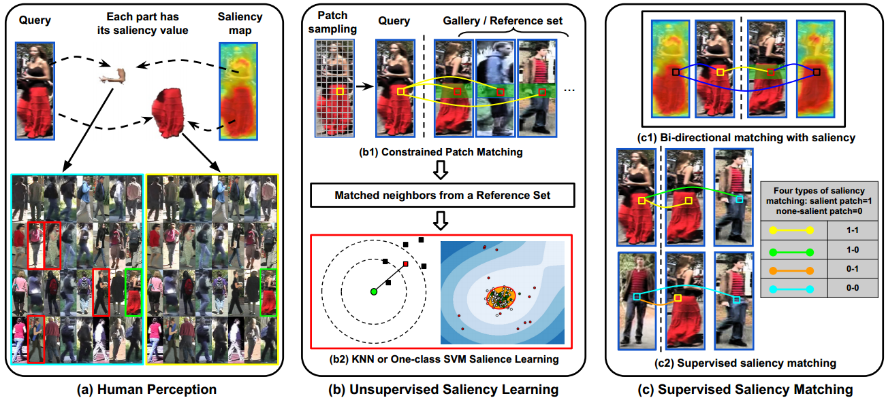
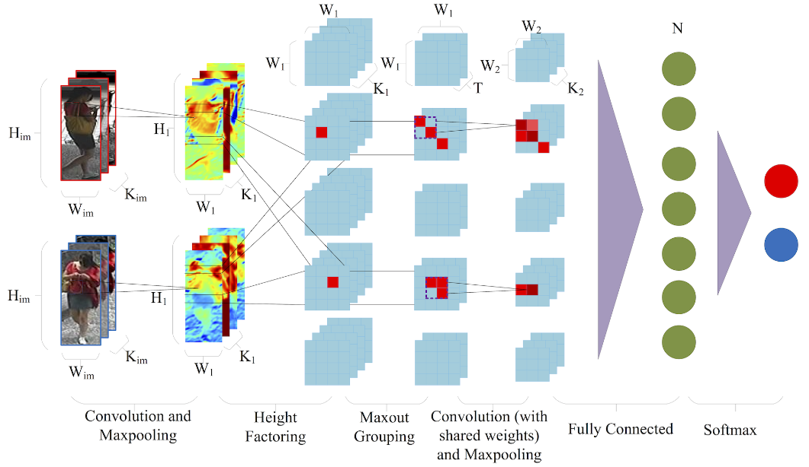
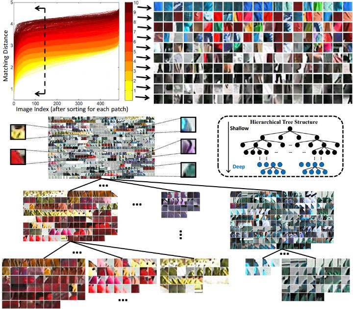
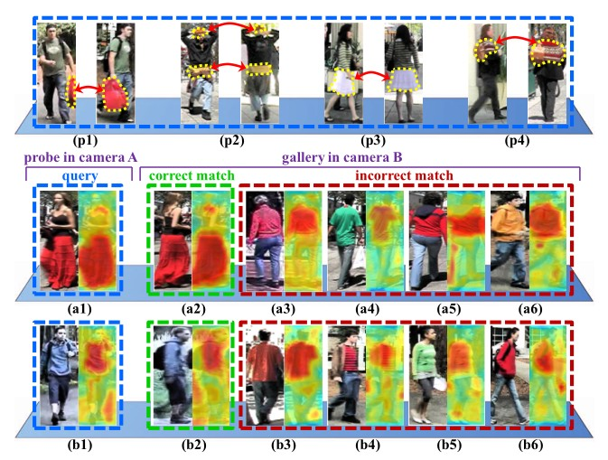

-
Person Re-identification by Saliency Learning,
R. Zhao, W. Ouyang, and X. Wang
Preprint , arXiv:1412.1908.
[PDF]
[Abstract]
[Bibtex]
[DOI]
Human eyes can recognize person identities based on small salient regions, i.e. human saliency is distinctive and reliable in pedestrian matching across disjoint camera views. However, such valuable information is often hidden when computing similarities of pedestrian images with existing approaches. Inspired by our user study result of human perception on human saliency, we propose a novel perspective for person re-identification based on learning human saliency and matching saliency distribution. The proposed saliency learning and matching framework consists of four steps: (1) To handle misalignment caused by drastic viewpoint change and pose variations, we apply adjacency constrained patch matching to build dense correspondence between image pairs. (2) We propose two alternative methods, i.e. K-Nearest Neighbors and One-class SVM, to estimate a saliency score for each image patch, through which distinctive features stand out without using identity labels in the training procedure. (3) saliency matching is proposed based on patch matching. Matching patches with inconsistent saliency brings penalty, and images of the same identity are recognized by minimizing the saliency matching cost. (4) Furthermore, saliency matching is tightly integrated with patch matching in a unified structural RankSVM learning framework. The effectiveness of our approach is validated on the VIPeR dataset and the CUHK01 dataset. Our approach outperforms the state-of-the-art person re-identification methods on both datasets.
|

@inproceedings{zhao2014person,
title = {Person Re-identification by Saliency Learning},
author={Zhao, Rui and Ouyang, Wanli and Wang, Xiaogang},
booktitle={arXiv:1412.1908},
year={2014}
}
-
Highly Efficient Forward and Backward Propagation of Convolutional Neural
Networks for Pixelwise Classification,
H. L, R. Zhao, and X. Wang
Preprint , arXiv:1412.4526.
[PDF]
[Abstract]
[Bibtex]
[DOI]
We present highly efficient algorithms for performing forward and backward propagation of Convolutional Neural Network (CNN) for pixelwise classification on images. For pixelwise classification tasks, such as image segmentation and object detection, surrounding image patches are fed into CNN for predicting the classes of centered pixels via forward propagation and for updating CNN parameters via backward propagation. However, forward and backward propagation was originally designed for whole-image classification. Directly applying it to pixelwise classification in a patch-by-patch scanning manner is extremely inefficient, because surrounding patches of pixels have large overlaps, which lead to a lot of redundant computation.
The proposed algorithms eliminate all the redundant computation in convolution and pooling on images by introducing novel d-regularly sparse kernels. It generates exactly the same results as those by patch-by-patch scanning. Convolution and pooling operations with such kernels are able to continuously access memory and can run efficiently on GPUs. A fraction of patches of interest can be chosen from each training image for backward propagation by applying a mask to the error map at the last CNN layer. Its computation complexity is constant with respect to the number of patches sampled from the image. Experiments have shown that our proposed algorithms speed up commonly used patch-by-patch scanning over 1500 times in both forward and backward propagation. The speedup increases with the sizes of images and patches.
|

|
@inproceedings{li2015high,
title = {Highly Efficient Forward and Backward Propagation of Convolutional Neural
Networks for Pixelwise Classification},
author={Li, Hongsheng and Zhao, Rui and Wang, Xiaogang},
booktitle={arXiv:1412.4526},
year={2015}
}
-
Person Re-Identification: System Design and Evaluation Overview,
X. Wang, and R. Zhao.
Chapter in Book: Person Re-identification , edited by Shaogang Gong, Marco Cristani, Shuicheng Yan, and Chen Change Loy, published by Springer 2014.
[Abstract]
[Bibtex]
[DOI]
|
Person re-identification has important applications in video surveillance. It is particularly challenging because observed pedestrians undergo significant variations across camera views, and there are a large number of pedestrians to be distinguished given small pedestrian images from surveillance videos. This chapter discusses different approaches of improving the key components of a person re-identification system, including feature design, feature learning, and metric learning, as well as their strength and weakness. It provides an overview of various person re-identification systems and their evaluation on benchmark datasets. Multiple benchmark datasets for person re-identification are summarized and discussed. The performance of some state-of-the-art person identification approaches on benchmark datasets is compared and analyzed. It also discusses a few future research directions on improving benchmark datasets, evaluation methodology, and system design.
|
@inproceedings{wang2014person,
title = {Person Re-identification: System Design and Evaluation Overview},
author={Wang, Xiaogang and Zhao, Rui},
booktitle={Person Re-Identification},
pages={351--370},
year={2014},
publisher={Springer}
}
-
DeepReid: Deep Filter Pairing Neural Network for Person Re-Identification,
W. Li, R. Zhao, T. Xiao and X. Wang.
IEEE International Conference on Computer Vision and Pattern Recognition (CVPR), 2014. (Acceptance rate: 29.8%)
[PDF]
[Abstract]
[Bibtex]
[Poster]
[DOI]
Person re-identification is to match pedestrian images from disjoint camera views detected by pedestrian detectors. Challenges are presented in the form of complex variations of lightings, poses, viewpoints, blurring effects, image resolutions, camera settings, occlusions and background clutter across camera views. In addition, misalignment introduced by the pedestrian detector will affect most existing person re-identification methods that use manually cropped pedestrian images and assume perfect detection.
In this paper, we propose a novel filter pairing neural network (FPNN) to jointly handle misalignment, photometric and geometric transforms, occlusions and background clutter. All the key components are jointly optimized to maximize the strength of each component when cooperating with others. In contrast to existing works that use handcrafted features, our method automatically learns features optimal for the re-identification task from data. The learned filter pairs encode photometric transforms. Its deep architecture makes it possible to model a mixture of complex photometric and geometric transforms. We build the largest benchmark re-id dataset with 13,164 images of 1,360 pedestrians. Unlike existing datasets, which only provide manually cropped pedestrian images, our dataset provides automatically detected bounding boxes for evaluation close to practical applications. Our neural network significantly outperforms state-of-the-art methods on this dataset.
|

@inproceedings{li2014deepreid,
title = {DeepReid: Deep Filter Pairing Neural Network for Person Re-identification},
author={Li, Wei and Zhao, Rui and Xiao, Tong and Wang, Xiaogang},
booktitle = {IEEE Conference on Computer Vision and Pattern Recognition (CVPR)},
year = {2014},
month = {June},
address = {Columbus, USA}
}
-
Learning Mid-level Filters for Person Re-Identfiation,
R. Zhao, W. Ouyang and X. Wang.
IEEE International Conference on Computer Vision and Pattern Recognition (CVPR), 2014. (Acceptance rate: 29.8%)
[PDF]
[Abstract]
[Bibtex]
[Project Page]
[Poster]
[DOI]
|  |
In this paper, we propose a novel approach of learning mid-level filters from automatically discovered patch clusters for person re-identification. It is well motivated by our study on what are good filters for person re-identification. Our mid-level filters are discriminatively learned for identifying specific visual patterns and distinguishing persons, and have good cross-view invariance. First, local patches are qualitatively measured and classified with their discriminative power. Discriminative and representative patches are collected for filter learning. Second, patch clusters with coherent appearance are obtained by pruning hierarchical clustering trees, and a simple but effective cross-view training strategy is proposed to learn filters that are view-invariant and discriminative. Third, filter responses are integrated with patch matching scores in RankSVM training. The effectiveness of our approach is validated on the VIPeR dataset and the CUHK01 dataset. The learned mid-level features are complementary to existing handcrafted low-level features, and improve the best Rank-1 matching rate on the VIPeR dataset by 14%.
|
@inproceedings{zhao2014learning,
title = {Learning Mid-level Filters for Person Re-identfiation},
author={Zhao, Rui and Ouyang, Wanli and Wang, Xiaogang},
booktitle = {IEEE Conference on Computer Vision and Pattern Recognition (CVPR)},
year = {2014},
month = {June},
address = {Columbus, USA}
}
-
Person Re-Identification by Salience Matching,
R. Zhao, W. Ouyang and X. Wang.
IEEE International Conference on Computer Vision (ICCV), 2013. (Acceptance rate: 27.5%)
[PDF]
[Abstract]
[Bibtex]
[Project Page]
[Poster]
[Code]
[CMC]
|  |
Human salience is distinctive and reliable information in matching pedestrians across disjoint camera views. In this paper, we exploit the pairwise salience distribution relationship between pedestrian images, and solve the person re-identification problem by proposing a salience matching strategy. To handle the misalignment problem in pedestrian images, patch matching is adopted and patch salience is estimated. Matching patches with inconsistent salience brings penalty. Images of the same person are recognized by minimizing thesalience matching cost. Furthermore, our salience matching is tightly integrated with patch matching in a unified structural RankSVM learning framework. The effectiveness of our approach is validated on the VIPeR dataset and the CUHK Campus dataset. It outperforms the state-of-the-art methods on both datasets.
|
@inproceedings{zhao2013person,
title = {Person Re-identification by Salience Matching},
author={Zhao, Rui and Ouyang, Wanli and Wang, Xiaogang},
booktitle = {IEEE International Conference on Computer Vision (ICCV)},
year = {2013},
month = {December},
address = {Sydney, Australia}
}
-
Unsupervised Salience Learning for Person Re-Identification,
R. Zhao, W. Ouyang and X. Wang.
IEEE International Conference on Computer Vision and Pattern Recognition (CVPR), 2013. (Acceptance rate: 25.2%)
[PDF]
[Abstract]
[Bibtex]
[Project Page]
[Poster]
[Code]
[DOI]
 |
Human eyes can recognize person identities based on some small salient regions. However, such valuable salient information is often hidden when computing similarities of images with existing approaches. Moreover, many existing approaches learn discriminative features and handle drastic viewpoint change in a supervised way and require labeling new training data for a different pair of camera views. In this paper, we propose a novel perspective for person re-identification based on unsupervised salience learning. Distinctive features are extracted without requiring identity labels in the training procedure. First, we apply adjacency constrained patch matching to build dense correspondence between image pairs, which shows effectiveness in handling misalignment caused by large viewpoint and pose variations. Second, we learn human salience in an unsupervised manner. To improve the performance of person re-identification, human salience is incorporated in patch matching to find reliable and discriminative matched patches. The effectiveness of our approach is validated on the widely used VIPeR dataset and ETHZ dataset.
|
@inproceedings{zhao2013unsupervised,
title = {Unsupervised Salience Learning for Person Re-identification},
author={Zhao, Rui and Ouyang, Wanli and Wang, Xiaogang},
booktitle = {IEEE Conference on Computer Vision and Pattern Recognition (CVPR)},
year = {2013},
month = {June},
address = {Portland, USA}
}
-
Counting Vehicles from Semantic Regions,
R. Zhao and X. Wang.
IEEE Transactions on Intelligent Transportation Systems (T-ITS), vol. 14, no. 2, pp. 1016-1022, March 2013. (Impact factor: 3.452)
[PDF]
[Abstract]
[Bibtex]
[DOI]
|
Automatically counting vehicles in complex traffic scenes from videos is challenging. Detection and tracking algorithms may fail due to occlusions, scene clutters, and large variations of viewpoints and vehicle types. We propose a new approach of counting vehicles through exploiting contextual regularities from scene structures. It breaks the problem into simpler problems, which count vehicles on each path separately. The model of each path and its source and sink add strong regularization on the motion and the sizes of vehicles and can thus significantly improve the accuracy of vehicle counting. Our approach is based on tracking and clustering feature points and can be summarized in threefold. First, an algorithm is proposed to automatically learn the models of scene structures. A traffic scene is segmented into local semantic regions by exploiting the temporal cooccurrence of local motions. Local semantic regions are connected into global complete paths using the proposed fast marching algorithm. Sources and sinks are estimated from the models of semantic regions. Second, an algorithm is proposed to cluster trajectories of feature points into objects and to estimate average vehicle sizes at different locations from initial clustering results. Third, trajectories of features points are often fragmented due to occlusions. By integrating the spatiotemporal features of trajectory clusters with contextual models of paths and sources and sinks, trajectory clusters are assigned into different paths and connected into complete trajectories. Experimental results on a complex traffic scene show the effectiveness of our approach.
|
@inproceedings{zhao2013counting,
title = {Counting Vehicles from Semantic Regions},
author={Zhao, Rui and Wang, Xiaogang},
booktitle = {IEEE Transaction on Intelligent Transportation Systems (T-ITS)},
year = {2013}
}
-
Human Reidentification with Transferred Metric Learning,
W. Li, R. Zhao, and X. Wang.
Asian Conference on Computer Vision (ACCV), 2012. (Oral Acceptance rate: 3.6%)
[PDF]
[Abstract]
[Bibtex]
[Dataset]
[DOI]
|
Human reidentification is to match persons observed in nonoverlapping camera views with visual features for inter-camera tracking. The ambiguity increases with the number of candidates to be distinguished. Simple temporal reasoning can simplify the problem by pruning the candidate set to be matched. Existing approaches adopt a fixed metric for matching all the subjects. Our approach is motivated by the insight that different visual metrics should be optimally learned for different candidate sets. We tackle this problem under a transfer learning framework. Given a large training set, the training samples are selected and reweighted according to their visual similarities with the query sample and its candidate set. A weighted maximum margin metric is online learned and transferred from a generic metric to a candidate-set-specific metric. The whole online reweighting and learning process takes less than two seconds per candidate set. Experiments on the VIPeR dataset and our dataset show that the proposed transferred metric learning significantly outperforms directly matching visual features or using a single generic metric learned from the whole training set.
|
@inproceedings{li2012human,
title = {Human Reidentification with Transferred Metric Learning},
author={Li, Wei and Zhao, Rui and Wang, Xiaogang},
booktitle = {Proceedings of Asian Conference on Computer Vision (ACCV)},
year = {2012}
}
-
SVD Based Linear Filtering in DCT Domain,
L. Zhuang, R. Zhao, N. Yu and B. Liu.
IEEE International Conference on Image Processing (ICIP), 2010.
[PDF]
[Abstract]
[Bibtex]
[DOI]
|
Efficient linear filtering in DCT domain is important in the area of processing and manipulation of image and video streams compressed in DCT-based method. In this paper, we proposed a novel method for linear filtering in DCT domain, regardless of filter type. We decompose any filter by SVD into weighted separable sub-filters which are well studied. Then we do fast linear filtering using these separable subfilters in DCT domain, and combine their results. To our best knowledge, it is the first method capable to do linear filtering with any type of filters directly in DCT domain. The scheme is demonstrated and discussed by doing Gabor filtering in DCT domain. Experiment results show that convolution result using the proposed solution is the same as that in spatial domain. Furthermore, our scheme is well suitable for distributed computing, which will improve computing speed greatly.
|
@inproceedings{zhuang2010SVD,
title = {SVD Based Linear Filtering in DCT Domain},
author={Zhuang, Liansheng and Zhao, Rui and Yu, Nenghai and Liu, Bin},
booktitle = {IEEE International Conference on Image Processing (ICIP)},
year = {2010}
}
IEEE Transaction on Image Processing (TIP)
IEEE Transaction on Intelligent Transportation Systems (TITS)
IEEE Transaction on Circuits and Systems for Video Technology (TCSVT)
Elsevier Journal of Neurocomputing (NEUCOM)
Elsevier Journal of Image and Vision Computing (IMAVIS)
Elsevier Journal of Visual Communication and Image Representation Registration (JVCI)
Springer Book "Person Re-identification", 2014
Springer Journal of Machine Vision and Applications (MVA)
IEEE International Conference on Computer Vision and Pattern Recognition (CVPR), 2015
Asian Conference of Computer Vision (ACCV), 2014
ACCV Workshop on Human Identification for Surveillance (HIS), 2014
ACCV Workshop on Deep Learning on Visual Data (DLVD), 2014


{kind=link}
{kind=link}
{kind=link}
{kind=link}
{kind=link}
{kind=link}
{kind=link}